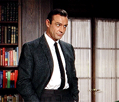
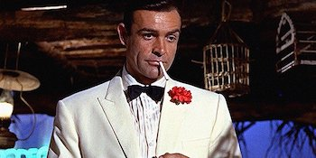
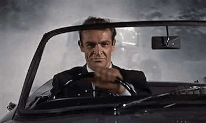
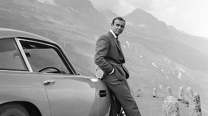

The press agent threw a furtive glance over his shoulder, surveyed the handful of drinkers in the London pub, and then stabbed the beer-and-onionscented air with his cigarillo. "Sean Connery?" he said, in a strangled voice. "You want my honest opinion of Sean Connery?" He took a biting drag of the cigar, drained his whiskey and soda, and began to talk about the actor who, in the movie role of James Bond, plays the smoothest espionage agent of them all. "Sean Connery," he said, in a voice that began in sober, measured tones, but finished like a cry for help, "is a great, big, conceited, untalented, woodenheaded ninny !" He put the glass down violently on the bar and flipped the cigarillo over his shoulder. "That's what I think of Mister Sean Connery." The following day, in a drafty corner of Stage D at the Pinewood Studios outside London, a group of technicians was preparing a scene for Goldfinger, the third of the Bond movies. A camera operator, who has worked on all three, peered through a viewfinder, turned slowly and squinted into the overhead lights. "Sean Connery," he said, "is one of the classiest actors I've ever worked with. This guy is a real man. In this business you don't come across many of them." The object of such polar affections is a lithe, 33-year-old, six-foottwo, 190-pounder who, after 11 years in show business, has suddenly found himself at the top of the movie heap.
"Nobody is more surprised than me," Connery says coolly, "although I suppose it had to happen sooner or later."
The monumental lack of interest in the pre-Bond Connery was, in some ways, understandable. In repose, Connery's face is unremarkable: bland, brown eyes fixed among features that are only saved from monotony by a set of long, slightly protruding ears, and a small scar on his left cheekbone, the result of an accident in a soccer game. His teeth are white, but when he yawns, which is frequently, his molars display a fine set of gold fillings. He looks, in short, like many of the unexceptional young men who knock each day at the gates of movie studios. "The difference with this guy," explains Albert R. Broccoli, who co-produces the James Bond films, "is the difference between a still photograph and film. When he starts to move, he comes alive."

Connery's recent ascent has been astonishingly swift. Since his first appearance two years ago as Ian Fleming's Secret Agent No. 007, Connery's price per picture has shot from $30,000 to about $300,000; he has starred in four films in the past 17 months with only a week's break between each (as Bond in From Russia With Love, with Ralph Richardson and Gina Lollobrigida in Woman of Straw, in Alfred Hitchcock's Marnie, and Goldfinger). The money and film offers are pouring in at almost the same rate as his fan mail, but Connery seems to be taking it in stride. "I've been down to my last quid many more times than I care to remember," Connery says, his voice breaking into the Scottish burr that is his voice away from the camera. "But nowadays, it's a case of being down to my last bag of rubies."
With a few of those rubies, he has finally said good-bye to a long series of moldy furnished rooms. Last year he purchased a four-story town house in London, which is amply stocked with books, a bar, canvas and easel for his hobby of oil painting, a secretary, two children, and his wife, actress Diane Cilento, who recently received an Academy Award nomination for her supporting role as the sultry slattern in Tom Jones. It is a measure of Connery's current status in the film world that he can refuse to discuss his home life, or to admit photographers across his threshold, and get away with it. "My private life, or most of it, is my own business," says Connery, "and I intend to keep it that way."

Some people in the film business feel that Connery's insistence on privacy might keep him from the very top rank of the film world. "Sean could be the biggest star in movies since Gable," says director Terrence Young. "But he won't be. He doesn't give a damn for the ancillary assets of being a star. It's not that he's ungrateful; it's just that he's too concerned with personal integrity. A hell of a lot of people don't like Sean because of this."
The grips on Hitchcock's Marnie did like Connery. So much so, in fact, that they took up a collection and bought him a $1,000 wristwatch. On the other hand, publicity men invariably dislike him. "Sean is a publicity creation," said one press agent, who worked with him before Bond. "We made him and now he treats us like swine." It is probably Connery's maverick approach to fame that appeals most to his fellow actors. Connery has been known to keep journalists waiting months for interviews; he recently shrugged off an invitation to participate in the cornerstone-laying ceremony for the new MCA skyscraper in Los Angeles; he shocked Hollywood by asking to read the script of Hitchcock's Marnie, something unheard of in an industry where Hitchcock is revered. "When he goes out," says one friend, "it's to enjoy himself as Sean Connery the individual, and to hell with the public and studio."
Connery protests that too much has been made of his failure to conform with the established patterns of the film business. "I just don't have time for all that jazz," Connery says. "I've been working continuously for a year-and-a-half and I • don't see why I can't grab my relaxation where and when I can. For the first time in my life, I can ask to read a script, and if you had been in some of the tripe I have, you'd know why. If I wore hats, I think you'd find I still take the same size."
Compared to the fatuous James Bond, Connery comes off as an admirable, selfeffacing, modest, 100-percent, levelheaded good guy. Bond, as 20 million book-buyers in 11 languages know, is the creation of Ian Fleming, and he moves swiftly through a world of crooks, dames and brand names with an air so blase that he easily takes the pseudo-sophistication championship of the world.
But where Bond drives a 1939-model 4Y2-liter Bentley, supercharged with an Amherst Villiers supercharger, Connery drives a battered Jaguar which he just purchased on a trade-in for a Volkswagen. Bond is garbed in the most expensive Savile Row finery; Connery prowls his town house in Levi's and dirty sweat shirts. Bond digs things like speckled eggs from French Marans hens, boiled for 3' 4 minutes; Connery is a Sean Connery After kicking about for 11 years in show business, he now roosts at the top of the heap. steak-and-potatoes man. In addition to a predilection for vodka (shaken, not stirred), Bond is a wine snob. Connery drinks beer. They share only a passion for roulette. Author Fleming, however, thinks Connery is perfect. "He has done the part wonderfully," Fleming says. "It was a great piece of casting. He certainly looks like Bond, and I don't know who could have done it better."

Connery today is more than somewhat amused by all this sudden approval, and speaks about it in a dry, sardonic voice. "If America had been discovered as many times as I have," he says, "no one would remember Columbus." He was born in Edinburgh, Scotland, on August 25, 1930, the son of Joseph and Euphamia Connery. "No one can quite make out my accent because of the Irish name," he says. "But I like my accent and refuse to talk what some people call English. My distant ancestors, of course, have all been Irish and proud of it." Connery's father is a truck driver, and Sean himself drove a milk truck for a year after leaving school at the age of 15. Eventually, he joined the Royal Navy, where he acquired a severe dislike for authority and two tattoos reading SCOTLAND FOREVER and MUM AND DAD. "I was discharged at 19 with a case of ulcers," he says. "I obviously wasn't temperamentally suited for Navy life." He spent the next few years at an assortment of jobs: cement mixer, lifeguard, bricklayer, plasterer, soccer player. For one six-month period he worked as a coffin polisher.
By 1953 he was working as a printer's assistant for the Edinburgh Evening News, and one weekend he went to London to take in some shows. He met a friend who was working in an English company of South Pacific. The friend told him they were auditioning chorus boys and that he should take a shot at it. Connery rehearsed for 48 hours, cramming in some hoofing lessons, and practicing some songs. "I went in and chanted a bit, and sang a bit, and to my astonishment was hired," he says. "It was really a lark." He spent the next 24 months on the road with South Pacific. "I was hooked," he says. When the road trip was over, Connery soon found that the life of an actor was not all chips with everything. "I went into my Too Period," he recalls. "I was too tall or too big, too Scottish or too Irish, too young or too old."
Nevertheless, Connery did manage to sustain himself with occasional TV and repertory jobs, and finally got his big break in 1956 when he was cast as the battered prizefighter in a BBC-TV production of Rod Serling's Requiem for a Heavyweight. One critic called it a "shattering performance," and the next day Connery's telephone kept ringing. "I must have received 200 offers that day," he says. "I finally settled for 20th Century Fox, but it didn't work out the way I had hoped. In fact, it proved a marriage of disaster." Connery was thrown into a series of second-rate Hollywood films, an experience he now likens to "a man walking through a swamp in a bad dream." Eventually, he fled back to London. One director who knows Connery feels that Connery's pre-Bond period was crucial. "He was on the garbage heap of acting," the director says, "but it gave him what he needed most: craft. He did everything: hoofing, movies, Shakespeare, TV, legitimate theater, everything. But it also made him somewhat bitter. The stories one hears now about his big head, his standing people up and the rest, they are the actions of a man having the last laugh."

The key to these last laughs, of course, has been the Bond films. He got the Bond role in an odd way. He starred in a 1961 BBC television production of Anna Karenina, with Claire Bloom, and got good reviews. At the same time, the London Daily Express was running a popularity poll to pick the man who should play Bond on the screen. From a total of 250 actors, Connery found himself among those who pulled the most votes. Connery promptly was called in for an interview with the film's makers, and as coproducer Harry Saltzman recalls: "We spoke to him and saw that he had the masculinity the part needed. Whenever he wanted to make a point, he'd bang his fist on the table, the desk, or his thigh, and we knew this guy had something. When he left we watched him from the window as he walked down the street, and we all said, 'He's got it.' We signed him without a screen test." "I did put on a bit of an act," Connery remembers, "but it certainly paid off. The reason I wanted to do him in the first place was to enable me to do other and more serious work. But after all, there's absolutely nothing wrong with the Bond films. They're good, solid entertainment, and Lord knows, there's not much of that around these days."
About the future, Connery usually shrugs. "I suppose more than anything else, I'd like to be an old man with a good face," he says. "Like Hitchcock. Or Picasso. They've worked hard all their lives, but there's nothing weary about them. They never wasted a day with the sort of nonsense that clutters up a life. They know that life is not just a bloody popularity contest. "For now, I'm reasonably content with what I'm doing. After all, I can kill any s.o.b. in the world and get away with it; I've got the powers of the greatest governments in the world behind me; I eat and drink nothing but the very best; and I also get the loveliest ladies in the world." He paused, laughed, and asked: "What could be better?"